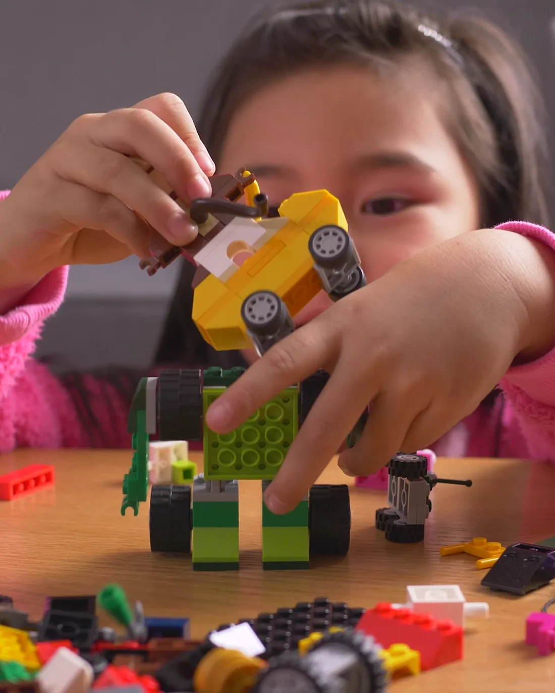

Toda criança aprende. Às vezes, de um jeito diferente.
Um olhar atento pra ajudar seu filho a aprender com mais leveza e confiança. E pra tirar um peso das suas costas de mãe.
Escuta da família Olhar individual Parceria com a escola
no tempo dela
A preocupação de mãe que ninguém vê.
Você não está sozinha, e o seu filho não é o problema.
Aprender de novo pode ser leve.
Quando a criança se sente segura, ela se abre pra aprender. Meu trabalho é criar esse espaço, sem cobrança e sem rótulo, respeitando o tempo dela e caminhando junto com a família.
Um caminho pensado pra cada criança.
Como a gente caminha junto
Sem susto e sem rótulo. Um passo de cada vez.
Acolhida da família
Primeiro eu escuto vocês. A história, as preocupações e o que já tentaram até aqui.
Olhar sobre a criança
Observo com calma como ela aprende e onde trava, sem pressa de colocar rótulo.
Plano individual
Monto um caminho no ritmo dela, com atividades que fazem sentido e devolvem a confiança.
Parceria com a escola
Quando faz sentido, converso com a escola pra todo mundo caminhar na mesma direção.
Ver seu filho acreditar em si muda tudo.
Mais do que nota boa, o que transforma é a criança descobrir que ela é capaz. É isso que a gente constrói, no tempo dela.
Quero conversar
Sou a Madalena. Cuido de quem está aprendendo, e de quem se preocupa.
Acredito que nenhuma criança quer ir mal. Por trás de cada dificuldade tem uma criança tentando, e uma família cansada de ouvir o que está errado. Meu trabalho é olhar pra isso com carinho e técnica, e devolver a leveza pra casa de vocês.
O que as famílias costumam perguntar.
A partir de que idade você atende? +
Atendo crianças em fase escolar e também dou orientação às famílias. Me conta a idade e o que está acontecendo que eu te oriento.
Meu filho precisa de laudo pra começar? +
Não precisa de laudo pra começar. A gente inicia pela escuta e pelo olhar sobre como ele aprende. Se em algum momento fizer sentido buscar outros profissionais, eu oriento.
Como é uma sessão? +
É um espaço seguro e leve, pensado pra criança se sentir à vontade. Nada de clima de prova ou cobrança.
Você conversa com a escola? +
Quando faz sentido e com o combinado da família, sim. A parceria com a escola ajuda muito no resultado.
Como agendo e quais os valores? +
Me chama que eu explico como funciona a agenda e os valores, com toda a transparência.
Vamos tirar esse peso das suas costas, juntas.
Me conta um pouco do que está acontecendo. A primeira conversa é pra gente se entender, sem compromisso.
Nesta prévia é só demonstração. Em produção, a sua mensagem chega direto pra Madalena.